公元391年，在亚历山大城，由于基督教会内部的矛盾，以及该城的教会与罗马教廷之间的冲突，一群基督教徒疯狂地烧毁了克娄巴特拉女王早先下令从大图书馆里抢救出来的那些宝藏，托勒密王朝膜拜的另一处藏有大量希腊手稿的西拉比斯神庙也难逃厄运。那一年，东汉（发明造纸术的蔡伦和大科学家张衡 [1] 在世）已经分裂，隋朝尚未建立，中国社会正处于历史动荡的魏晋南北朝时代。在长期独尊儒学之后，学术界的思辨之风再起，就有了我们今日仍津津乐道的“魏晋风度”和“竹林七贤”。
所谓“魏晋风度”乃魏晋之际名士风度之谓也，亦称魏晋风流。名士们崇尚自然、超然物外，率真任性而风流自赏。他们言词高妙，不务世事，喜好饮酒，以隐逸为乐。尊《周易》《老子》和《庄子》为“三玄”，以至于清谈或玄谈成为崇尚虚无空谈名理的一种风气，魏末晋初，以诗人阮籍、嵇康为首的“竹林七贤”便是其中的典型代表。作为士大夫意识形态的一种人格表现，“魏晋风度”成为风靡一时的审美理想。
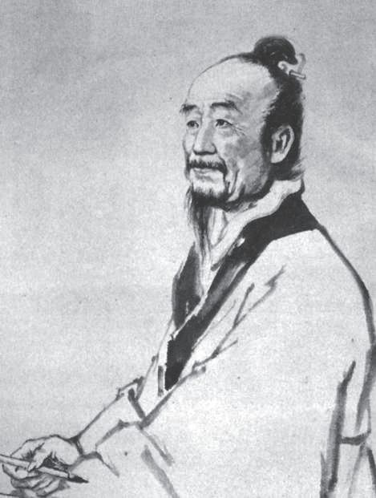
魏晋时期的数学家刘徽
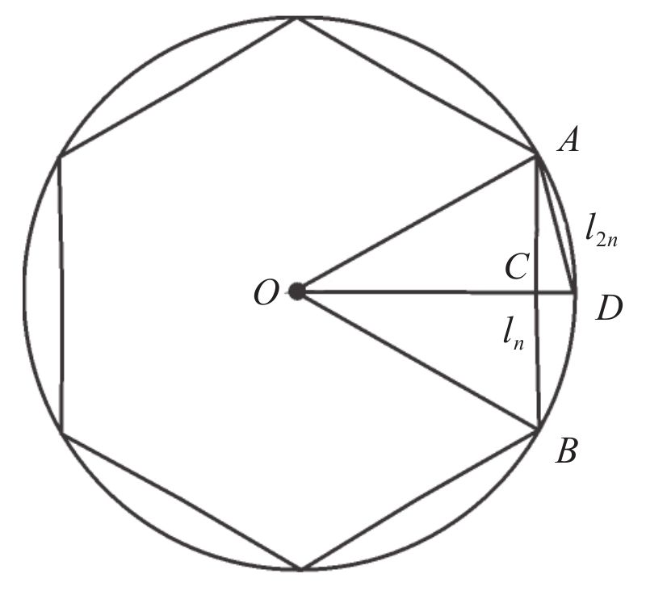
圆周率的计算
在这样的社会和人文环境下，中国的数学研究也掀起了论证的热潮，多部学术著作以注释《周髀算经》或《九章算术》的形式出现，实质上是要给出这两部著作中一些重要结论的证明。前文中我们提到的赵爽（三国东吴人）便是其中的先驱人物，成就更大的是刘徽，他和赵爽的生卒年均无法考证，我们只知道他也生活在公元3世纪，并于263年（魏国和吴国均未灭亡）撰写了《九章算术注》。难以断定两个人谁在先，他们被公认为取得重要成就的中国数学家中最早历史留名的。
刘徽用几何图形分割后重新拼合（出入相补法）等方法验证了《九章算术》中各种图形计算公式的正确性，这与赵爽证明勾股定理一样，开创了中国古代史上对数学命题进行逻辑证明的范例。刘徽也注意到了这种方法的缺陷，即与平面的情形不同，并不是任意两个体积相等的立体图形都可以剖分或拼补。为了绕过这一障碍，刘徽借助了无限小的方法，如同阿基米德所做的那样。事实上，他采用了极限和不可分量这两种无限小的方法，指出《九章算术》中的球体积计算公式是错误的。
确切地说，刘徽是在一个立方体内作两个垂直的内切圆柱，所交部分刚好把立方体的内切球包含在内且与之相切，他称之为“牟合方盖”。刘徽发现，球体积与牟合方盖体积之比应该为
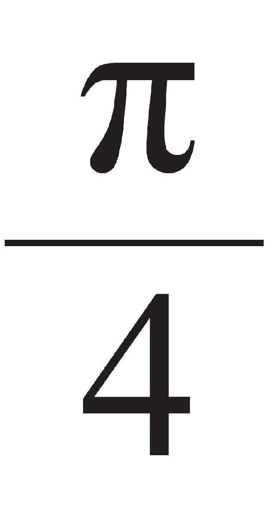
，这个结果实际上接近了积分学中以意大利数学家命名的“卡瓦列利原理”。可惜的是，他没有总结出一般形式，以至于无法计算出牟合方盖的体积，也就难以得到球体体积的计算公式。不过，他所用的方法为两个世纪以后祖冲之父子最终的成功铺平了道路。除了对《九章算术》逐一注释以外，《九章算术注》一书的第10章是刘徽写的一篇论文，后来又单独刊行，即《海岛算经》。《海岛算经》发展了古代天文学中的“重差术”，成为测量学的典籍。当然，刘徽最有价值的工作是在“注方田”（《九章算术注》的第1章）中所引进的割圆术，用以计算圆的周长、面积和圆周率，其要旨是用圆内接正多边形去逼近圆。刘徽写道：
割之弥细，所失弥少，割之又割，以至于不可割，则与圆合体而无所失矣。
刘徽注意到，两次利用勾股定理，正2n边形的边长l2n 可由正n边形的边长ln 导出。如上图所示，设圆的半径为r，则
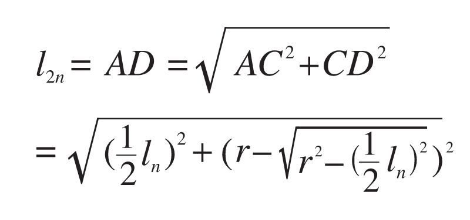
取r=1，从正六边形出发，到第5次时，就得到正192（6×25 ）边形的边长，由此得到的圆周率
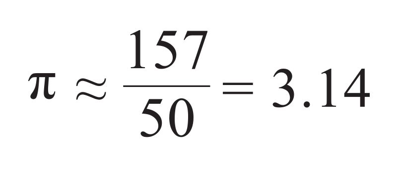
称为徽率。这与阿基米德于公元前240年所得到的结果和所用的方法基本一致，只不过后者利用了圆的外切和内接正多边形，因此只算了96（6×24 ）边形的边长就得到了同样的值。注文［尚未证实是不是刘徽所为，但应算到了正3072（6×29 ）边形的边长］得出
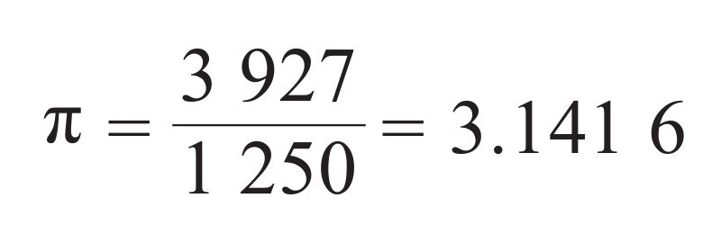
鉴于刘徽在数学领域所取得的卓越成就，公元1109年，宋徽宗封其为淄乡男。由于同时被封的其他人均以其故乡命名，由此可以推断，刘徽是山东人。因为含淄字的县级地名只有淄博和临淄，而按照《汉书》的记载，只有邻近淄博的邹平县有个淄乡。作为儒学发祥地的齐鲁之邦，经两汉到魏晋，学术氛围十分浓厚，这使得刘徽受到良好的文化熏陶，并置身于辩难之风。从刘徽的文字里也可以看出他谙熟诸子百家言论，深得思想解放之先风，因而得以开创上述算术之演绎。
在刘徽注释《九章算术》的第三年，中国（继秦朝以后）获得了第二次统一，魏国的一个将军司马炎建立了晋朝（西晋）。经济的发展和日益增加的跨地域交往刺激了地理学的发展，并产生了地图学家裴秀（223—271），他提出比例尺、方位、距离等6条基本原则，奠定了中国制图学的理论基础。一些新的风俗习惯随之出现，如喝茶，若干新的节约劳动力的工具也被发明出来，如独轮车和水磨。公元283年，道家中的博物学家兼炼丹术士葛洪（284—364）出生了。
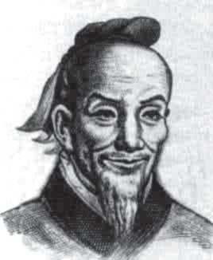
南北朝时期的数学家祖冲之
可是，北方的经济区仍面临着多个外来民族入侵的危险。317年，晋室被迫迁到长江以南，建都建康（南京），史称东晋，一共延续了103年（北方则被分割成16个小国）。此后南方的晋朝灭亡，相继被4个军人篡权并改国号，即宋（刘宋）、齐、梁、陈，史称南朝，历时约170年，均设都建康。刘宋10年，即429年，祖冲之出生在建康的一个历法世家。虽然他后来只在镇江、徐州等地做过几次小官，却是中国数学史上第一个名列正史的数学家。
《隋书》里记载了祖冲之算出的圆周率的上下限为
3.1415926<π<3.1415927
数值精确到小数点后7位。这是祖冲之最重要的数学贡献，直到1424年这个纪录才被阿拉伯数学家卡西（Kashi，？—1429）打破，后者算到了小数点后17位。遗憾的是，没有人知道祖冲之的计算方法。一般认为，他沿用了刘徽的割圆术。祖冲之必定是一个很有毅力的人，因为如果按照割圆术的方法，需要连续算到正24576边形，才能得到上述数据。
《隋书》里还记载了祖冲之计算圆周率的另一项重要成果，即约率为
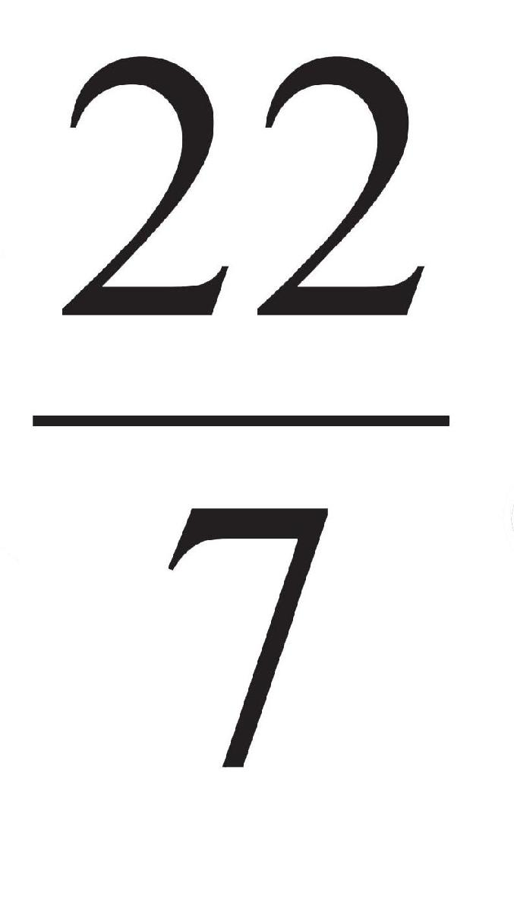
，密率为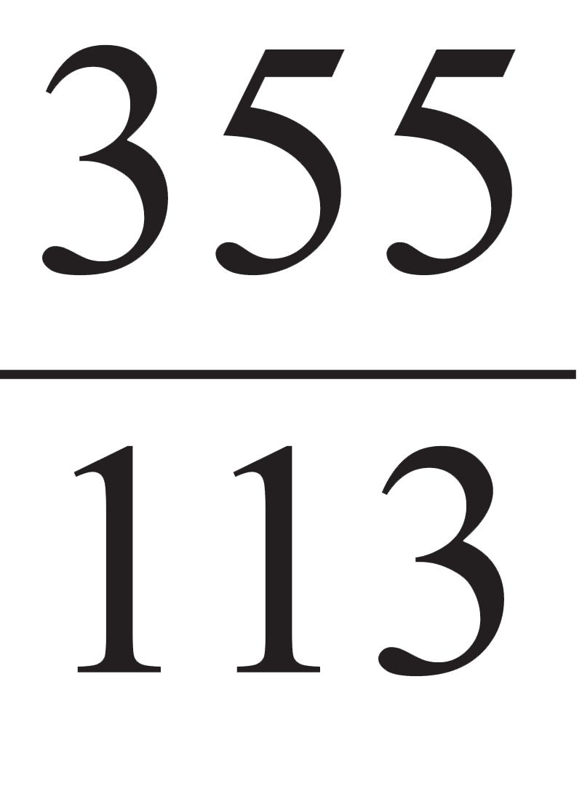
。约率与阿基米德的计算结果一致，都精确到小数点后两位，密率则精确到小数点后6位。在现代数论中，如果将π表示成连分数，则其渐进分数为：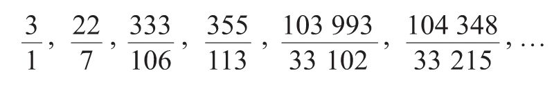
第一项与巴比伦人和《九章算术》里的结果相同，可称作古率，第二项是约率，第4项是密率，这是分子和分母都不超过1000的最接近π真值的分数。
1913年，日本数学史家三上义夫（1875—1950）在其有重大影响的著作《中国和日本数学之发展》里，主张把 这一圆周率数值称为“祖率”。在欧洲，直到1573年，这个密率才由欧洲数学家奥托（V.Otho，约1550—1605）得到。遗憾的是，时至今日，我们仍然无法知晓祖冲之是如何计算出这个分数的。尚没有任何证据表明中国古代已有连分数的概念或应用，而割圆术是无法直接得到祖率的。因此有史家猜测，祖冲之使用的是同样发明于南北朝时期的“调日法”。
“调日法”的基本思想如下：假如
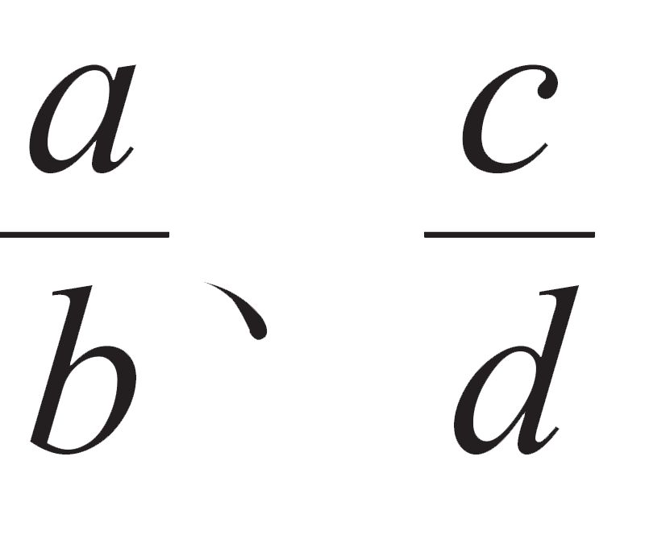
分别为不足和过剩近似分数，那么适当选取m、n，新得出的分数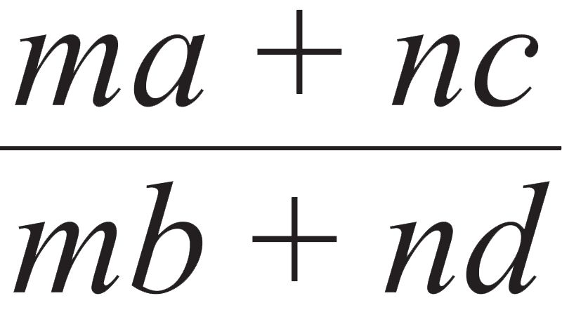
就有可能更接近真值。这个方法是由刘宋政治家何承天（370—447）首先提出来的，他还是著名的天文学家和文学家。如果在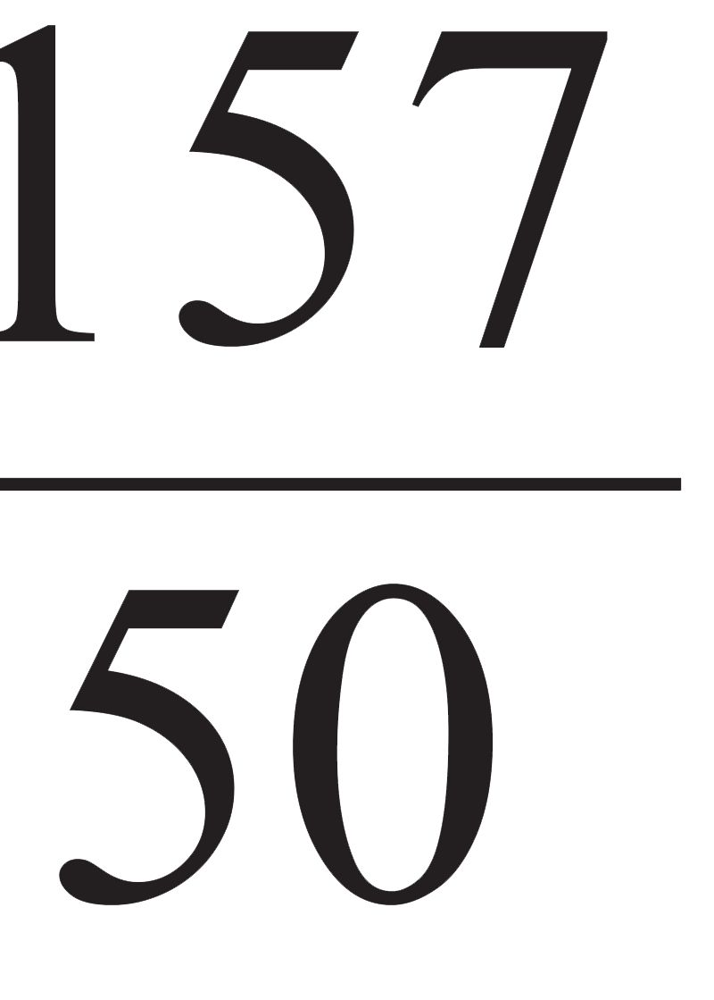
（徽率）和 （约率）之间选择m=1，n=9，或在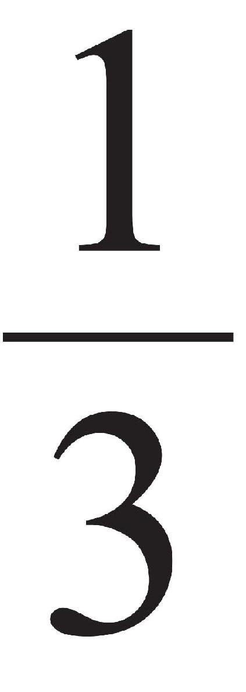
（古率）和 之间选择m=1，n=16，均可获得 （密率）。我们可以推测，祖冲之用“调日法”求得密率后，再用割圆术加以验证，正如阿基米德同时运用平衡法和穷竭法。和刘徽一样，祖冲之的另一项成就也是球体积的计算。计算结果在他撰写的一篇非常有名的“驳议”（被收入《宋书》）里有所提及，并极有可能被写进他的代表性著作《缀术》里，可惜后者失传了。有趣的是，唐代数学家李淳风却在为《九章算术》所写的一篇注文中称之为“祖暅之开立圆术”。祖暅之即祖暅，是祖冲之的儿子，在数学上也有许多创造。因此，现代的数学史家一般把球体积计算公式归功于祖氏父子。
按照李淳风的描述，祖氏是这样计算“牟合方盖”的体积的：先取以圆半径r为边长的一个立方体，以一顶点为心、r为半径分纵横两次各截立方体为圆柱体。如此，立方体就被分成4个部分：两个圆柱体的共同部分（内棋，即牟合方盖的
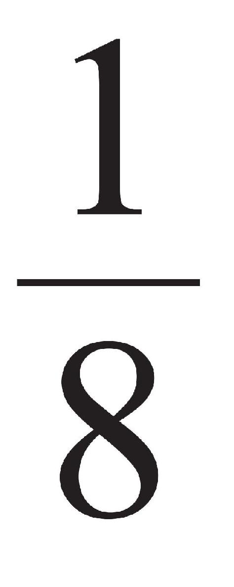
）和其余的三个部分（外三棋）。祖氏先算出“外三棋”的体积，这是问题的关键，他们发现，这三个部分在任何一个高度的截面积之和与一个内切的倒方锥相等。这个倒方锥的体积是立方体的 ，因此内棋的体积是立方体的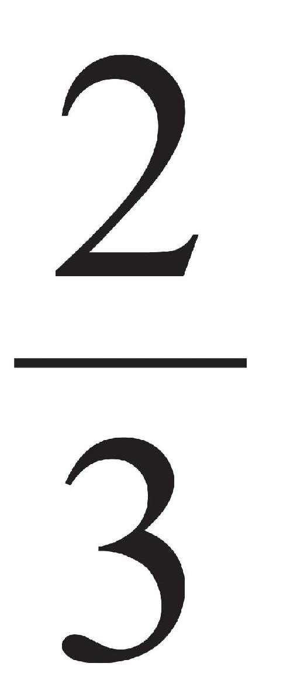
，故而牟合方盖的体积为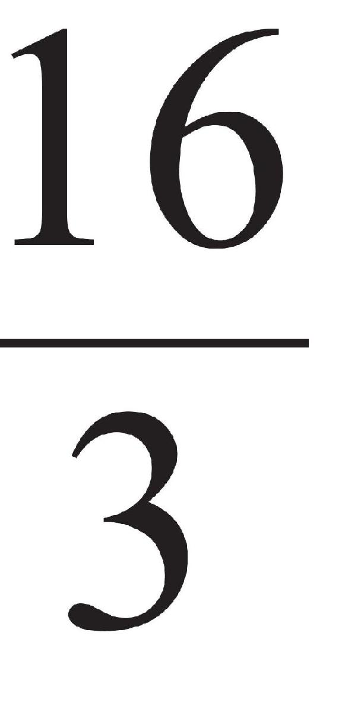
r3 。最后，利用刘徽关于牟合方盖体积与球体积之比为
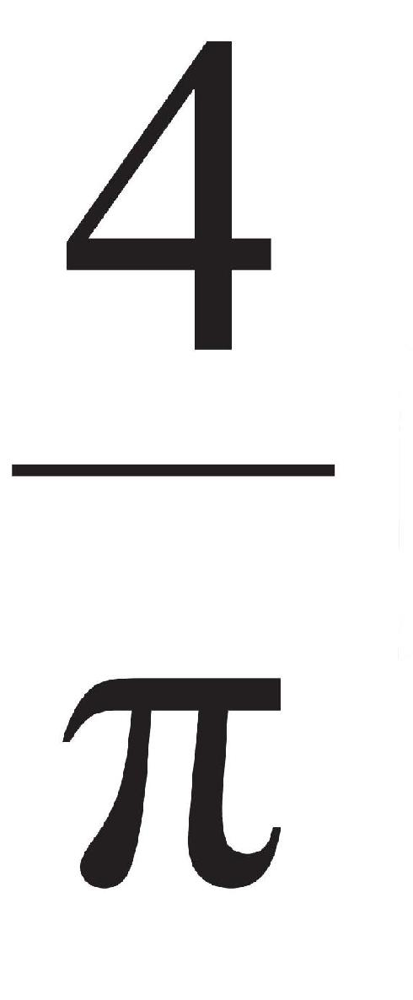
的结果，就得到阿基米德的球体积计算公式：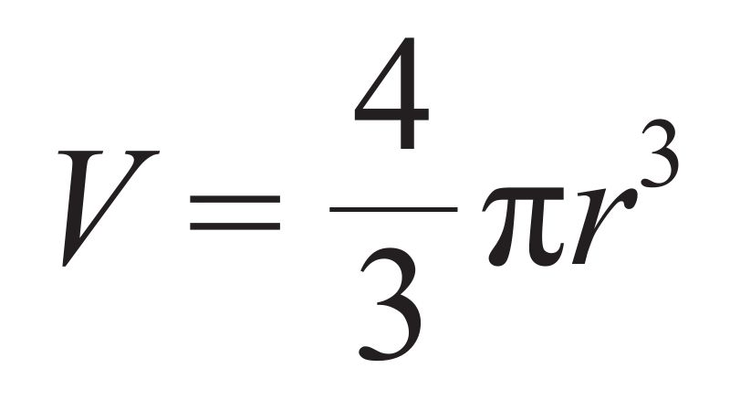
正如中国当代数学史家李文林（1942—）所指出的，“刘徽和祖冲之父子的工作中蕴含的思想是很深刻的，它们反映了魏晋南北朝时期中国古典数学研究中出现的论证倾向，以及这种倾向所达到的高度。然而令人迷惑的是，这种倾向随着这一时期的结束，可以说是戛然而止。”祖冲之的《缀术》在隋唐曾与《九章算术》一起被列为官方的教科书，国子监的算学馆也规定其为必读书之一，且修业的时间长达4年，并曾流传到朝鲜和日本，但可惜在公元10世纪以后却完全失传了。
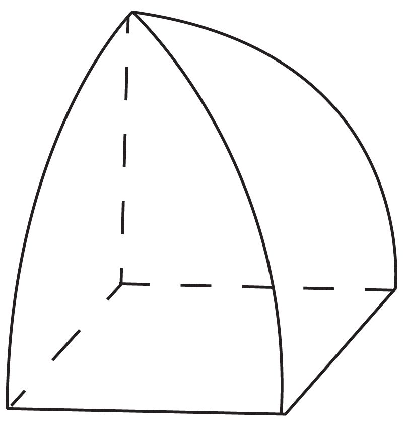
牟合方盖的八分之一
639年，阿拉伯人大举入侵埃及，此时罗马人早已退出，埃及在行政上受拜占庭控制。拜占庭军队与阿拉伯人交战三年之后被迫撤离，亚历山大学术宝库里仅存的那些残本也被入侵者付之一炬，希腊文明至此落下了帷幕。此后，埃及才有了开罗，埃及人改说阿拉伯语并信奉伊斯兰教。那时中国正逢大唐盛世，唐太宗李世民在位。唐朝是中国封建社会最繁荣的时代，疆域的领土也不断扩大，首都长安（西安）成为各国商人和名士的聚集地，中国与西域等地的交往十分频繁。
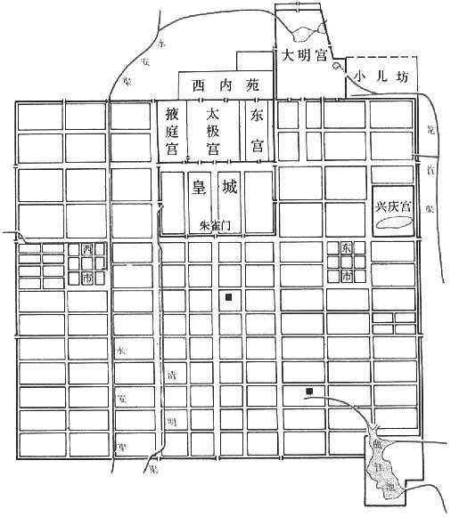
唐代长安城平面图，正方形里套着长方形
虽说唐代在数学上并没有产生与其前的魏晋南北朝或其后的宋元相媲美的大师，却在数学教育制度的确立和数学典籍的整理方面有所建树。唐代不仅沿袭了北朝和隋代创立的“算学”制度，设立了“算术博士” [2] 的官衔，还在科举考试中设置了数学科目，给通过者授予官衔，可是级别最低，且到晚唐就被废止了。事实上，唐代文化氛围的主流是人文主义，而不太重视科学技术，这与意大利的文艺复兴时期颇为相似。存在近300年的唐代在数学方面最有意义的成就莫过于《算经十书》的整理和出版，这是唐高宗李治下令编撰的。
奉诏负责这10部算经编撰工作的正是前文提到的李淳风（602—670），除了精通数学以外，他更以天文学上的成就闻名。在堪称世界上最早的气象学专著《乙巳占》里，他把风力分为8级（加上无风和微风则为10级）。直到1805年，一位英国学者才把风力等级划分为0~12级。除了《周髀算经》《九章算术》《海岛算经》和《缀术》以外，《算经十书》中至少还有三部值得一提，分别是《孙子算经》《张丘建算经》和《缉古算经》。这三部书的共同特点是，每一部都提出了一个非常有价值的问题，并以此传世。
《孙子算经》的作者不详，一般被视为4世纪的作品，作者可能是一位姓孙的数学家。该书最为人所知的是一个“物不知数”问题：
今有物不知其数，三三数之剩二，五五数之剩三，七七数之剩二，问物几何？
这相当于求解如下同余方程组：
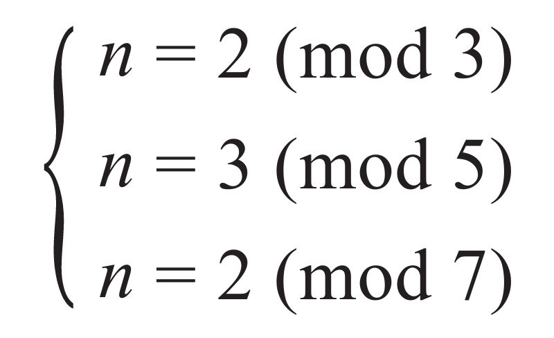
《孙子算经》给出的答案是23，这是符合该同余方程组的最小正整数。不仅如此，书中还给出了求解方法，其中的余数2、3和2可以换成任意数。这是一次同余式组的解法（孙子定理）的特殊形式，8世纪的唐代僧人一行（673—727）曾用此法制定历法，更一般的方法由宋代数学家秦九韶给出。
《张丘建算经》成书于5世纪，作者是北魏人张丘建。书中最后一道题堪称亮点，通常被称为“百鸡问题”，民间则流传着县令考问神童的故事。书中原文如下：
今有鸡翁一，直钱五；鸡母一，直钱三；鸡雏三，值钱一。凡百钱买鸡百只，问鸡翁、母、雏各几何？
设鸡翁、鸡母和鸡雏的数量分别是x、y、z，此题相当于解下列不定方程组的正整数解：
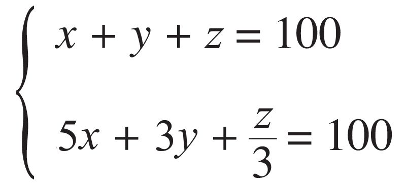
张丘建给出了全部三组解答，即（4，18，78），（8，11，81），（12，4，84）。这两个三元一次方程可以化为一个二元一次方程，而让另一个元成为参数。今天我们知道，多元一次方程均可以给出一般解。类似的问题在国外过了很久，才由13世纪的意大利人斐波那契和15世纪的阿拉伯人卡西提出。遗憾的是，张丘建没有乘胜追击对这个问题进行总结，他也不如孙子幸运，后者有秦九韶完成后续研究。
《缉古算经》在10部算经中成书最晚（7世纪），作者王孝通是初唐的数学家，曾为算学博士（可能是唐代最有成就的算学博士了）。这部书也是一系列实用问题集，但对当时的人来说难度很大，主要涉及天文历法、土木工程、仓房和地窖大小以及勾股问题等，大多数需要用双二次方程或高次方程来解决。尤其值得一提的是，书中给出了28个形如的
x3 +px2 +qx=c
正系数方程，并用注来说明各项系数的来历。作者给出了它们的正有理数根，但没有给出具体的解法。在世界数学史上，这是关于三次方程的数值解及其应用的最古老的文献。
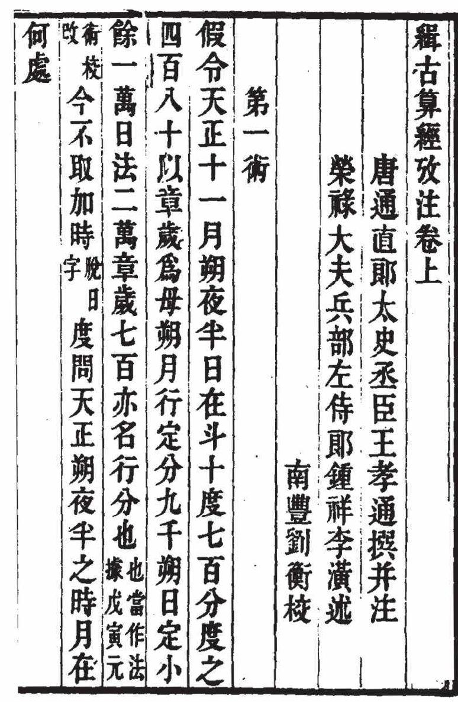
清版《缉古算经》
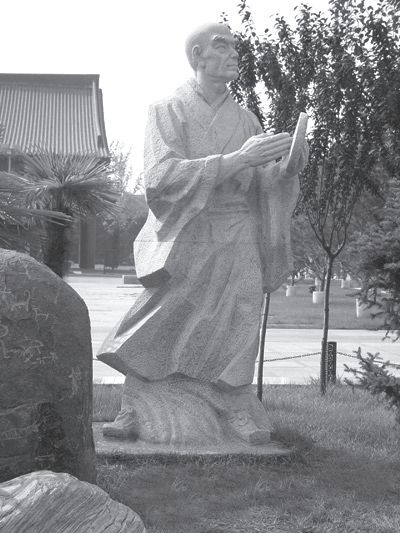
法国有梅森，中国有一行。作者摄于西安
值得一提的是，世界上现存最古老的印刷书籍为印度佛教典籍《金刚经》的汉语版。是在唐代（868）印制的。1900年，此书被匈牙利裔英国考古学家斯坦因（A.Stein，1862—1943）在敦煌购得，曾藏于伦敦大英博物馆，现藏于英国国家图书馆。由此可以断定，《算经十书》的原版早已不复存在。而据明代的意大利传教士利玛窦记载，当时中国有“极其大量的图书在流通”，并且以极低的价格出售。
[1] 张衡（78—139），以制造出世界上第一台监测地震的仪器——地动仪闻名，曾采用730/232（≈3.1466）作为圆周率（如属实，当在刘徽之前），可惜其数学著作已经失传。此外，他还是著名的文学家和画家。
[2] 在中国古代，“算术博士”并非最早的专精一艺的官衔，西晋便置“律学博士”，北魏则增“医学博士”。